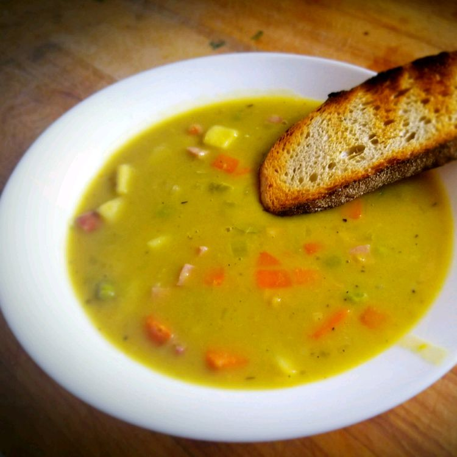

Split Pea Soup

Description
A nourishing, hearty meal to satisfy a comfort food craving.
It's a classical fall & wintertime recipe.
Ingredients
- Dried split peas
- Cold water
- Ham bone
- 2 onions
- 3 carrots
- 3 celery stalks
- 1 potato
- Salt
- Pepper
- Dried marjoram
Steps
- Place peas in a large stockpot and cover with several inches of cold water, let soak for 8 hours then drain & rinse.
- Add 2 quarts of cold water, ham bone, onion, and your seasonings into the stockpot, bring to a boil and simmer for 1 1/2 hours, stir occasionally.
- Remove ham bone, cut off meat, dice and return meat to soup. Add rest of vegetables and cook slowly until veggies are tender (30-40 min).
- Plate up and serve!